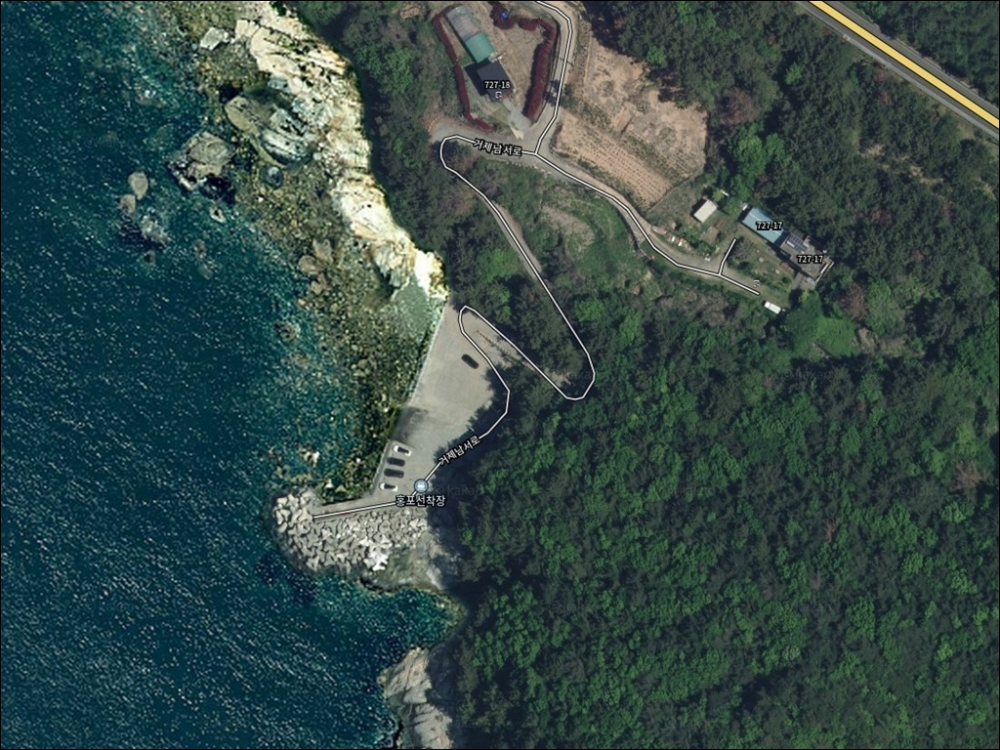
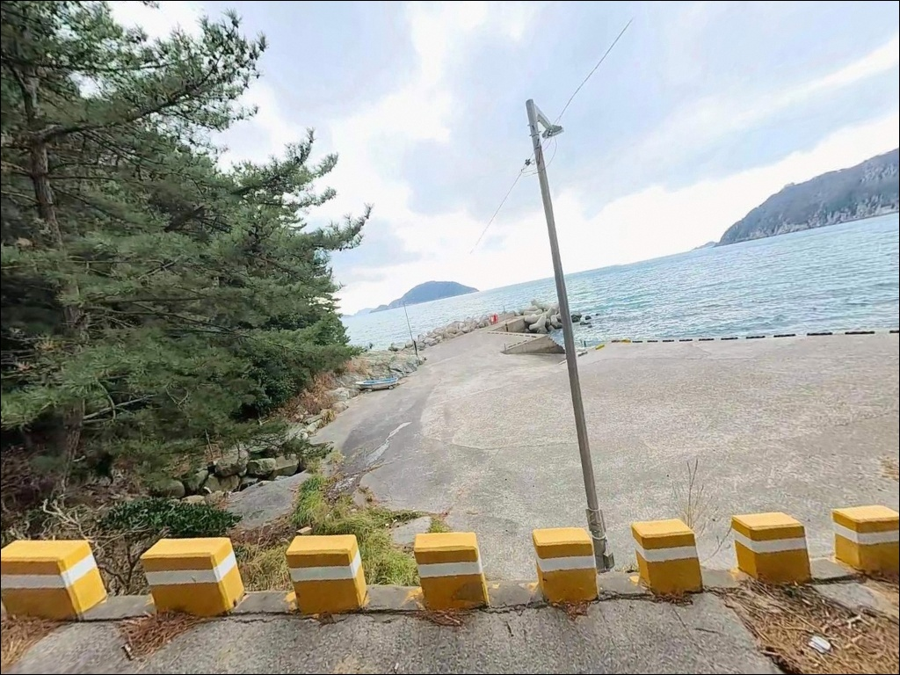
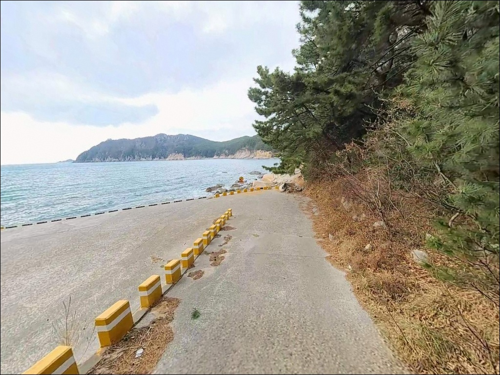
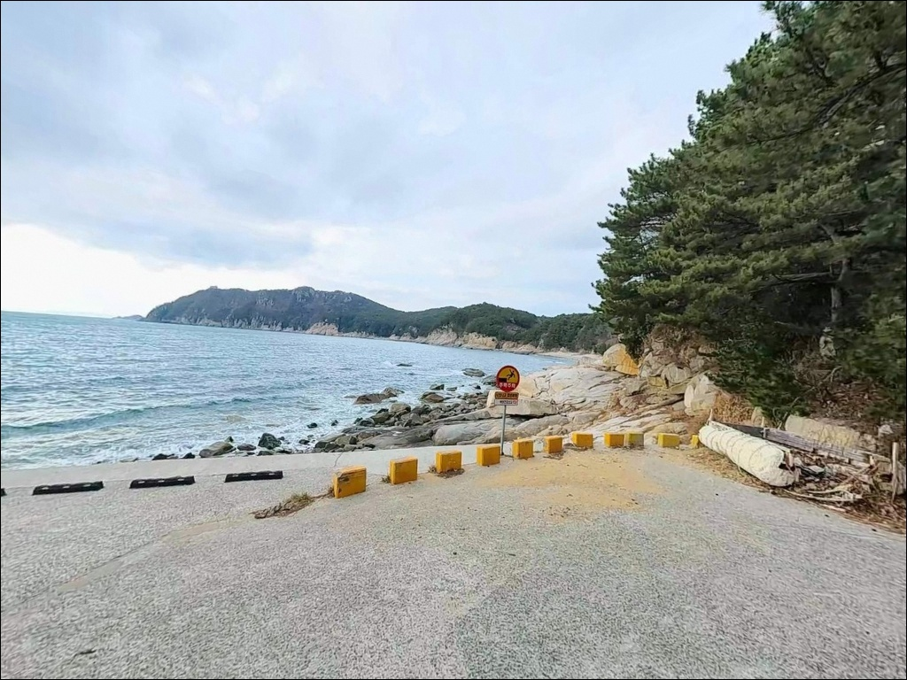
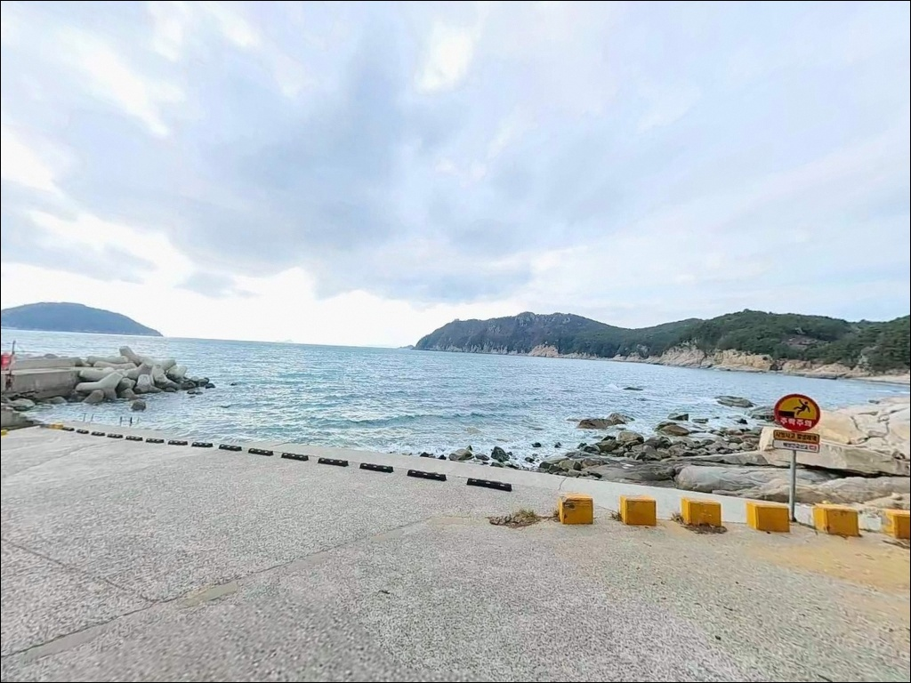
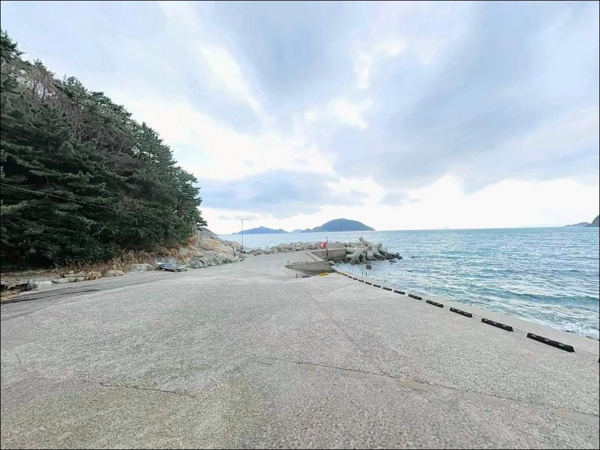
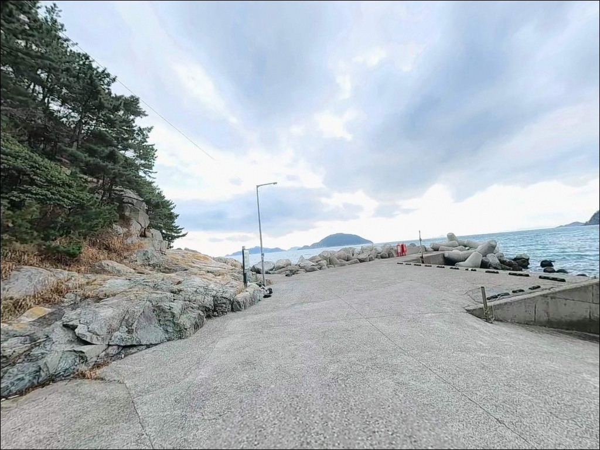
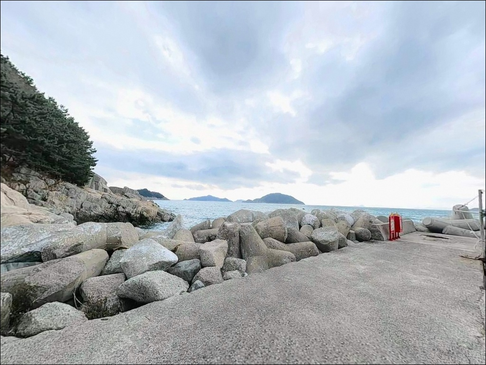
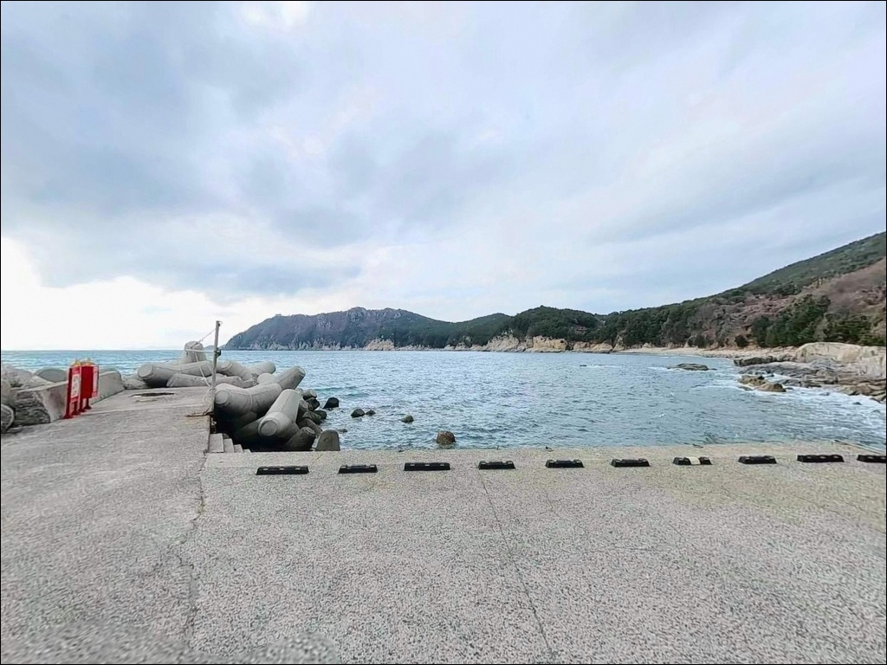

원투 채비 던졌다 터질 때, 거제 홍포선착장 외항 브레이크라인 에깅


포인트 안내
홍포선착장
경남 거제시 남부면 저구리 산 90-418
홍포선착장 내항 바닥은 자갈 구조로,
원투 채비를 운용하기에 포인트 여건이 맞지 않습니다.
바닥 걸림이 잦고 채비 손실이 반복되는 이유가
여기에 있습니다.
이 글은 홍포선착장의 지형 조건과 적합 낚시 방식,
진입 여건과 차박 운용 기준에 집중합니다.
이 선착장은 거제도 남부 해안선 중에서도
외해에 가장 직접적으로 노출된 위치입니다.
테트라포드가 설치된 소형 방파제와
좌우로 이어지는 갯바위가
복합 지형을 이루고 있으며,
수심이 빠르게 깊어지는 구조로
루어와 에깅에 유리한 조건을 갖추고 있습니다.
오메가 일몰 명소로도 알려진 곳이지만,
낚시 포인트로서의 가능성이
먼저 판단되어야 하는 자리입니다.
조황 정보나 특정 어종 보장은
이 글의 범위에 포함되지 않습니다.
지형 구조, 적합 낚시 스타일,
진입 동선과 차박 운용 가능성을
중심으로 정리했습니다.

1. 진입 동선과 포인트 접근성
홍포선착장으로 향하는 주요 진입로는
여차~홍포 해안도로입니다.
여차몽돌해수욕장에서 홍포마을까지
약 3.5km 구간 중
일부 비포장 구간이 포함되어 있으며,
경사가 있고 노폭이 좁은 곳이
반복적으로 나타납니다.
내려가는 방향보다
돌아 나오는 오르막 구간이
체감상 더 까다롭습니다.
야간 진입 시에는 도로 가시성이 크게 낮아지므로
주간에 먼저 동선을 확인하는 편이 안전합니다.
주차는 선착장 진입부 소형 공터와
선착장 앞 평탄 부지를 활용합니다.
승용차 기준 2~3대 규모이며,
회차 공간이 제한적이라
대형 캠핑카나 장축 차량의 진입은
현실적으로 부담이 있는 구조입니다.

2. 차박 환경과 야간 체류 여건
홍포선착장 일대는 민가 밀집도가 낮고
심야 시간대에는 유동 인구가 거의 없습니다.
한적하고 프라이버시가 높은 환경이지만,
그만큼 외해에서 밀려오는 바람과 파도 영향을
직접 받는 구조입니다.
선착장 자체 가로등 광량이 충분하지 않아
야간에는 사실상 암흑에 가까운 환경입니다.
낚시를 마치고 하룻밤 머무는 용도로는
조용한 분위기가 갖춰져 있지만,
주차 공간이 협소해 2대 이상 동반 차박은 어렵습니다.
기상이 나쁜 날은 파도 소리가 크고
차량 흔들림이 있는 환경임을 감안해야 합니다.
이 일대는 한려해상국립공원 인접 구역에 해당합니다.
야영·취사 허용 여부는 현장 안내판 기준으로
먼저 확인하는 것이 원칙이며,
화기 사용은 자제하는 편이 안전합니다.


3. 주변 편의시설 및 인프라 현황
홍포선착장 자체에는
공공 화장실을 포함해 별도 시설이 없습니다.
화장실이 필요할 경우
차량으로 약 3분 거리의
홍포 전망대 주차장 화장실을
이용해야 합니다.
편의점은 선착장에서 약 3.3km 거리의
저구리 소재지에 24시간 운영 점포가 있습니다.
주유소, 식당, 병원은 이 거리 내에서
확인되지 않으며,
출발 전 식수·얼음·낚시 소품을 완비하고
들어오는 편이 현실적입니다.
약 3.3km 거리의 저구항 인근에는
소규모 상점과 식당이 위치해 있어
필요한 경우 이 동선을 활용할 수 있습니다.
응급 상황 대비 병원·약국은
남부면사무소 방면(약 8km)까지
이동해야 합니다.

4. 진입 전 반드시 챙겨야 할 준비사항
홍포선착장 방문 전에
가장 먼저 확인할 것은 기상입니다.
외해에 직접 노출된 구조여서
너울성 파도가 발생하면
선착장까지 파도가 올라오는 상황이 생깁니다.
기상청 해상 예보와 파고 정보를
출조 당일 아침 반드시 확인해야 합니다.
테트라포드 위와 갯바위 구간은
바닥이 미끄럽습니다.
구명조끼와 논슬립 계열 신발은
선택이 아닌 기본 장비입니다.
야간에는 헤드랜턴과 예비 배터리를 함께 챙기고,
에깅 시 집어등을 추가하면
외항 쪽 탐색 효율이 올라갑니다.
쓰레기는 전량 되가져오는 것이 기본 매너입니다.
어선 접안 구역 주변에 자리를 잡을 경우
어민 통행 동선을 먼저 파악하고
공간을 확보해야 합니다.
한려해상국립공원 인접 구역이므로
현장 안내판을 확인한 뒤
화기 사용 여부를 결정하는 편이 맞습니다.

5. 자갈 바닥에서 원투낚시 조과가 나오지 않는 이유
홍포선착장의 내항 쪽 바닥은 자갈로 이루어진 구조입니다.
원투 채비가 바닥에 안착하는 순간
걸림이 잦아지고, 채비 손실이
반복되는 구조적 이유가 여기 있습니다.
원투낚시는 이 포인트에 적합하지 않습니다.
반면 외항 방향으로 향할수록
지형 성격이 달라집니다.
선착장 앞 수심은 5~7m 내외이며,
외항 쪽으로 캐스팅하면
10~15m 이상으로 수심이 급변하는
브레이크라인이 형성됩니다.
이 구간이 이 포인트에서
공략 가치가 가장 높은 라인입니다.
선착장 좌우 갯바위 지형과의 연결부도
탐색 대상입니다.
거제 남부 외해 조류는 산소 포화도가 높아
어군 형성에 유리한 해역으로 알려져 있으며,
테트라포드와 수중 암반 사이에
먹이 유입 라인이 자연스럽게 형성됩니다.
출조 전 홍포선착장 및 거제 남부면 일대
최신 조황을 먼저 검색해 보시기 바랍니다.


6. 홍포선착장에 어울리는 낚시 스타일
이 포인트에서 가장 잘 맞는 낚시는
테트라포드를 활용한 루어낚시입니다.
지그헤드 + 웜 채비로
테트라포드 사이 틈새를 탐색하거나
외항 방향으로 캐스팅해
수심 변화 구간을 공략하는 방식이
이 지형 조건과 가장 잘 맞습니다.
볼락과 쥐노래미 등
바위 계열 어종을 기대해볼 수 있는 구조입니다.
에깅도 유효한 선택입니다.
외해 직결 구조와 거제 남부권 전반의
무늬오징어 분포 특성을 고려하면,
해질녘~야간 타이밍에
외항 방향으로 캐스팅하는 방식이
이 포인트 구조에 맞습니다.
조류가 강할 때는 딥 타입 에기로 전환해
수심층을 확보하는 편이 좋습니다.
찌낚시는 선착장 좌우 갯바위 연결부에서
흘림 채비를 운용하는 방식으로 접근합니다.
거제 남부권 외해 수심 특성상
제로찌 이하의 가라앉힘 채비가
바닥층 탐색에 유리합니다.
벵에돔·감성돔을 기대해볼 수 있는
지형 조건을 갖추고 있습니다.

7. 대안 포인트와 플랜 B 동선
홍포선착장 기상이 여의치 않거나
주차 공간 확보가 어려운 경우,
첫 번째 대안은 약 3.3km 거리의
저구항입니다.
어촌정주어항으로 공식 등재된 곳으로
방파제 규모가 크고
진입로와 주차 여건이 안정적입니다.
홍포선착장을 처음 방문한다면
저구항을 기점으로 잡고
상황을 보며 이동하는 동선이 효율적입니다.
외해 직결형 포인트를 유지하면서
공간 여유를 원한다면
여차방파제가 두 번째 대안입니다.
홍포에서 북쪽으로 약 4km 거리이며,
여차~홍포 해안도로 역방향으로
이동하면 닿을 수 있습니다.
소형 방파제 구조가 홍포와 유사하고
원투낚시 여건도 홍포보다 나은 편입니다.
넓은 주차 공간과 화장실을
갖춘 차박 환경이 필요하다면
저구항 수변광장 주차장이
가장 현실적인 대안입니다.
거제 남부면 일대에는 낚시 포인트가
해안선 전역에 분산되어 있어
상황에 따라 이동 폭을 넓혀도
선택지가 줄어들지 않습니다.

외해 지형을 읽고 가면
홍포선착장은 달라 보입니다
테트라포드 루어와 에깅을 즐기는 낚시인이라면
홍포선착장의 지형 조건은
충분히 기대할 수 있는 구조입니다.
외해 직면형 포인트는 포인트는 좋지만
날씨 영향을 크게 받는 타입이라는 점을
먼저 이해하고 가는 편이 맞습니다.
기상 확인과 채비 선택이
이 포인트의 성패를 나누는 핵심입니다.
반면 원투 채비가 메인이거나
대형 차량을 운용하는 경우,
또는 야간 편의시설이 필수인 경우라면
홍포선착장보다 저구항이나
여차방파제 쪽이 더 맞는 선택입니다.
외해 접하는 거제 남부 해안선에는
대안 포인트가 많으므로
컨디션에 따라 이동 폭을 넓혀도
선택지는 줄어들지 않습니다.
오메가 일몰을 배경으로 에기를 던지고
어두워지면 테트라포드 주변을
지그헤드로 탐색하다
소형 차량에서 하룻밤 머무는 방식은,
인프라를 내려놓을 준비가 된 낚시인에게
기억에 남는 출조가 될 수 있는 자리입니다.